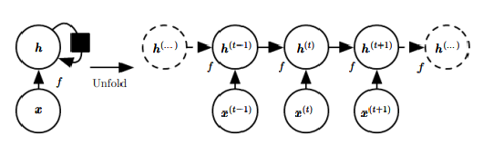
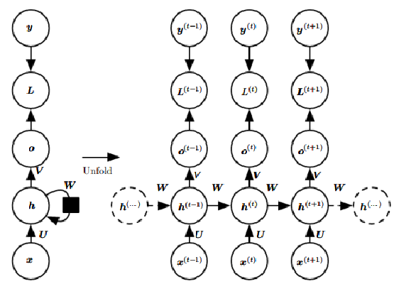
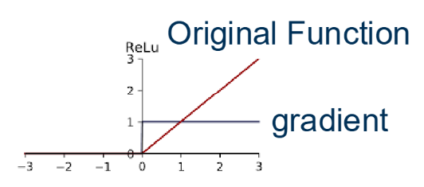
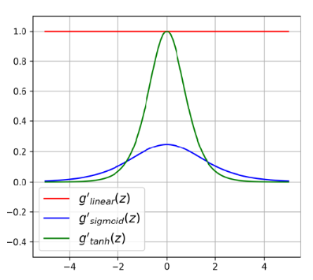
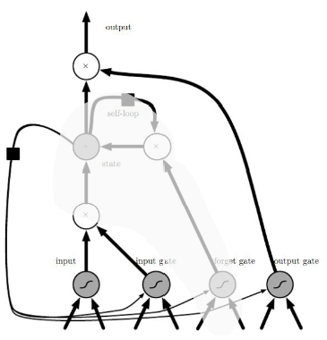
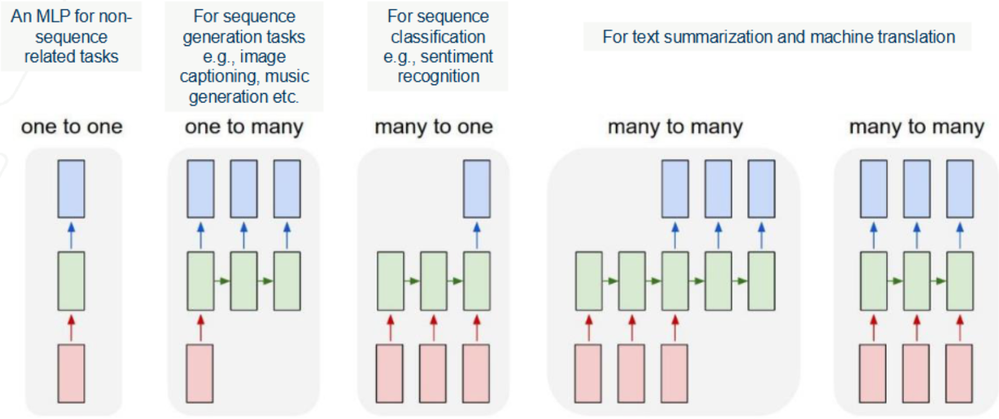

1. Learning Objectives
This lecture introduces sequence modeling for data with temporal or ordered structure, such as time-series signals and natural language. We begin by analyzing the limitations of Multilayer Perceptrons (MLPs) for modeling variable-length sequences and temporal dependencies. We then develop Recurrent Neural Networks (RNNs), including their mathematical formulation, loss evaluation across time, and training via Backpropagation Through Time (BPTT). A detailed analysis of gradient propagation reveals the vanishing gradient problem and explains why learning long-range dependencies can be difficult in standard recurrent models.
To address these limitations, we introduce gated recurrent architectures, including Long Short-Term Memory (LSTM) networks and Gated Recurrent Units (GRUs). We derive their gate equations and update rules, and examine how gating mechanisms improve gradient flow and enable long-term memory retention. By the end of this lecture, students should understand the theoretical foundations of recurrent sequence models, the challenges of training them, and the architectural innovations that make deep sequence learning feasible.
2. Introduction to Sequence Modeling
Limitations of MLPs in Modeling Sequences
Multilayer Perceptrons (MLPs) expect fixed-size inputs and outputs, which makes them poorly suited for modeling variable-length sequences. Because MLPs process inputs as independent feature vectors, they do not naturally account for the ordering of inputs and therefore fail to capture temporal dependencies that are essential in time-series tasks such as language modeling, stock prediction, and sensor data analysis.
In addition, modeling long sequences with MLPs would require an extremely large number of parameters. This often leads to severe overfitting when training data is limited, making MLPs impractical for many sequence modeling problems.
Types of Sequence Modeling Problems
Sequence modeling tasks arise in several common forms. One important class is sequence prediction and classification, where a single output (such as a label or real value) is predicted from an input sequence. Examples include sentiment analysis and stock price prediction.
Another class is sequence generation, where the model produces an output sequence based on learned patterns in the data. Applications include generating music, text, or other structured signals.
A third class is sequence-to-sequence prediction, which maps an input sequence to an output sequence. This setting is essential for applications such as machine translation and video captioning, where the output sequence may have arbitrary length.

Variables in Figure 1
\(\mathbf{x}(t)\): Input vector at time \(t\), providing new information at each time step.
\(\mathbf{h}(t)\): Hidden state at time \(t\), representing the accumulated memory from previous inputs.
\(\mathbf{o}(t)\): Output vector at time \(t\), generated from the current hidden state.
\(\mathbf{U}\): Weight matrix mapping input \(\mathbf{x}(t)\) to the hidden state.
\(\mathbf{W}\): Weight matrix connecting \(\mathbf{h}(t-1)\) to \(\mathbf{h}(t)\).
\(\mathbf{V}\): Weight matrix mapping \(\mathbf{h}(t)\) to the output \(\mathbf{o}(t)\).
3. Recurrent Neural Networks (RNNs)
Recurrent Neural Networks (RNNs) are neural networks designed for sequential data, where the order of inputs is important. As illustrated in Figure 2, RNNs maintain a hidden state that acts as memory, allowing information to persist across time steps. At each time step, the hidden state is updated using both the current input and the previous hidden state, enabling the model to capture temporal dependencies. This makes RNNs well suited for tasks such as language modeling, time-series forecasting, and any application where context from prior inputs influences future predictions.
3.1 RNN Architecture

The key idea behind RNNs is that each output depends not only on the current input but also on a hidden state that summarizes past information. Because the same parameters are reused at every time step, RNNs can handle variable-length sequences while keeping the number of parameters manageable.
At a high level, the hidden state evolves according to the recurrence \[\mathbf{h}(t) = f(\mathbf{h}(t-1), \mathbf{x}(t)),\] where \(f(\cdot)\) is a nonlinear function such as \(\tanh\) or ReLU.
To make this computation explicit, we introduce bias vectors \(\mathbf{b}\) and \(\mathbf{c}\) and write the full RNN update equations:
\[\begin{aligned} \mathbf{a}(t) &= \mathbf{b} + \mathbf{W}\mathbf{h}(t-1) + \mathbf{U}\mathbf{x}(t) && \text{(pre-activation)} \\ \mathbf{h}(t) &= \tanh(\mathbf{a}(t)) && \text{(hidden state)} \\ \mathbf{o}(t) &= \mathbf{c} + \mathbf{V}\mathbf{h}(t) && \text{(output logits)} \\ \mathbf{y}(t) &= \text{softmax}(\mathbf{o}(t)) && \text{(output probabilities)}\end{aligned}\]
These equations show how an RNN processes an input sequence by repeatedly updating its hidden state, combining new information with previously stored context, and producing an output at each time step.
3.2 Loss Evaluation and Backpropagation
In RNN training, the predicted output at each time step is compared with the corresponding target output. The total loss over a sequence of length \(T\) is typically defined as the sum of per-time-step losses: \[\mathcal{L} = \sum_{t=1}^{T} L(t),\] where \(L(t)\) denotes the loss at time step \(t\). Common choices include Mean Squared Error (MSE) for regression and Cross-Entropy Loss for classification.
To minimize this sequence-level objective, RNNs are trained using Backpropagation Through Time (BPTT), an extension of standard backpropagation for sequential models. The network is first unrolled across the entire sequence, forming a deep computational graph with one layer per time step. Gradients are then computed by applying the chain rule backward through this unfolded network.
Because each hidden state depends on the previous hidden state, the gradient at a given time step depends not only on the local loss but also on future time steps. During BPTT, gradients with respect to the parameters (e.g., \(\mathbf{U}, \mathbf{W}, \mathbf{V}\)) accumulate contributions from the entire sequence: \[\frac{\partial \mathcal{L}}{\partial \mathbf{W}} = \sum_{t=1}^{T} \frac{\partial L(t)}{\partial \mathbf{W}}.\]
However, computing each term requires repeated application of the chain rule through the hidden-state dynamics. In particular, gradients with respect to the recurrent weights involve products of Jacobian matrices of the form \[\frac{\partial \mathbf{h}(t)}{\partial \mathbf{h}(t-1)},\] which are multiplied across many time steps. This repeated multiplication leads directly to a fundamental training challenge for RNNs.
3.3 The Vanishing Gradient Problem
A major difficulty in training RNNs is the vanishing gradient problem, which becomes severe when backpropagating through long sequences. Because BPTT requires gradients to propagate across many time steps, small changes in gradient magnitude can compound dramatically.
Gradient Propagation in RNNs
As introduced in Section 3.1, the RNN state update is \[\mathbf{a}(t)=\mathbf{b}+\mathbf{W}\mathbf{h}(t-1)+\mathbf{U}\mathbf{x}(t), \qquad \mathbf{h}(t)=\sigma(\mathbf{a}(t)),\] where \(\sigma(\cdot)\) is an element-wise nonlinearity (e.g., \(\tanh\) or ReLU).
To understand gradient behavior, consider how a hidden state at time \(t\) depends on a much earlier state: \[\frac{\partial \mathbf{h}(t)}{\partial \mathbf{h}(0)} = \prod_{k=1}^{t}\frac{\partial \mathbf{h}(k)}{\partial \mathbf{h}(k-1)}.\]
From the update equation, \[\frac{\partial \mathbf{h}(t)}{\partial \mathbf{h}(t-1)} = \mathbf{J}(t)\mathbf{W}^{T},\] where \(\mathbf{J}(t)=\mathrm{diag}\!\left(\sigma'(\mathbf{a}(t))\right)\) is the Jacobian of the activation function.
Expanding across time steps yields \[\frac{\partial \mathbf{h}(t)}{\partial \mathbf{h}(0)} = \mathbf{J}(t)\mathbf{W}^{T} \mathbf{J}(t-1)\mathbf{W}^{T}\cdots \mathbf{J}(1)\mathbf{W}^{T}.\]
Why Gradients Vanish
Gradients therefore become products of many matrices. If the eigenvalues of \(\mathbf{W}\) and the derivatives of the activation function are smaller than one, repeated multiplication drives the gradient toward zero: \[\frac{\partial \mathbf{h}(t)}{\partial \mathbf{h}(0)} \approx 0 \quad \text{for large } t.\]
As a result, early time steps have little influence on learning, making it difficult for RNNs to capture long-range dependencies.
Mitigating the Vanishing Gradient Problem
Several techniques help preserve gradient flow:
ReLU activations: Non-saturating activations maintain larger gradients than sigmoid or tanh.
Identity initialization: Initializing \(\mathbf{W}\) close to the identity stabilizes gradient magnitude across time.
Gradient clipping: Prevents exploding gradients during training.
LSTM and GRU architectures: Gating mechanisms enable long-term memory.
These improvements allow RNNs to capture longer temporal dependencies.


4. Long Short-Term Memory (LSTM) Networks
Long Short-Term Memory (LSTM) networks are a type of Recurrent Neural Network (RNN) specifically designed to address the vanishing gradient problem discussed in Section 3.1. By introducing a memory cell and a set of gating mechanisms, LSTMs regulate the flow of information through time and enable learning of long-term dependencies. Figure 5 illustrates the structure of an individual LSTM cell.

4.1 LSTM Architecture and Gates
An LSTM cell augments the standard RNN hidden state with a cell state that serves as long-term memory. Information is regulated through three multiplicative gates that decide what to forget, what to store, and what to output at each time step.
Forget Gate \(\mathbf{f}^{(t)}\): Determines how much of the previous cell state should be retained: \[\mathbf{f}^{(t)} = \sigma(\mathbf{b}^f + \mathbf{U}^f \mathbf{x}^{(t)} + \mathbf{W}^f \mathbf{h}^{(t-1)})\]
Input Gate \(\mathbf{g}^{(t)}\): Controls how much new information should be written to memory: \[\mathbf{g}^{(t)} = \sigma(\mathbf{b}^g + \mathbf{U}^g \mathbf{x}^{(t)} + \mathbf{W}^g \mathbf{h}^{(t-1)})\]
Output Gate \(\mathbf{o}^{(t)}\): Determines which parts of the memory influence the hidden state: \[\mathbf{o}^{(t)} = \sigma(\mathbf{b}^o + \mathbf{U}^o \mathbf{x}^{(t)} + \mathbf{W}^o \mathbf{h}^{(t-1)})\]
4.2 Updating the Cell and Hidden States
After computing the gates, the LSTM updates its internal memory and hidden state in three steps.
Candidate Cell State: \[\tilde{\mathbf{s}}^{(t)} = \tanh(\mathbf{b}^c + \mathbf{U}^c \mathbf{x}^{(t)} + \mathbf{W}^c \mathbf{h}^{(t-1)})\]
Cell State Update: \[\mathbf{s}^{(t)} = \mathbf{f}^{(t)} \circ \mathbf{s}^{(t-1)} + \mathbf{g}^{(t)} \circ \tilde{\mathbf{s}}^{(t)}\]
Hidden State Update: \[\mathbf{h}^{(t)} = \mathbf{o}^{(t)} \circ \tanh(\mathbf{s}^{(t)})\]
Here, \(\circ\) denotes element-wise multiplication. This additive memory update allows gradients to flow more easily across time steps, mitigating the vanishing gradient problem.
4.3 Advantages of LSTMs over Standard RNNs
LSTMs are highly effective for modeling long sequences because their gated memory structure allows information to persist across many time steps. The additive update of the cell state provides a stable pathway for gradients, significantly reducing the vanishing gradient problem that affects standard RNNs. As a result, LSTMs can selectively remember or forget information, making them well suited for tasks such as natural language processing, speech recognition, and time-series forecasting.
4.4 Limitations of LSTMs
Despite their strengths, LSTMs also have several practical drawbacks. Their gating mechanisms introduce multiple weight matrices, increasing computational cost and the number of trainable parameters compared to standard RNNs. This can lead to slower training and a greater risk of overfitting on smaller datasets. In addition, like all recurrent architectures, LSTMs process sequences sequentially, limiting opportunities for parallel computation. For large-scale sequence modeling, modern Transformer architectures often provide better scalability and performance.
5. Gated Recurrent Units (GRUs)
Gated Recurrent Units (GRUs) are a recurrent neural network architecture designed as a simpler alternative to Long Short-Term Memory (LSTM) networks. GRUs capture long-range dependencies in sequential data while using fewer parameters and a more streamlined structure. This efficiency is achieved by combining the forget and input gates of LSTMs into a single update gate and eliminating the separate cell state, relying instead on a single hidden state.
5.1 GRU Architecture and Gates
Each GRU cell contains two gates that regulate information flow:
Update Gate \(\mathbf{z}^{(t)}\): controls how much of the previous hidden state is preserved: \[\mathbf{z}^{(t)}=\sigma(\mathbf{b}^z+\mathbf{U}^z\mathbf{x}^{(t)}+\mathbf{W}^z\mathbf{h}^{(t-1)})\]
Reset Gate \(\mathbf{r}^{(t)}\): determines how much past information to forget when forming the candidate state: \[\mathbf{r}^{(t)}=\sigma(\mathbf{b}^r+\mathbf{U}^r\mathbf{x}^{(t)}+\mathbf{W}^r\mathbf{h}^{(t-1)})\]
5.2 Updating the Hidden State
Using these gates, the GRU first computes a candidate hidden state \[\tilde{\mathbf{h}}^{(t)}=\tanh\!\left(\mathbf{b}+\mathbf{U}\mathbf{x}^{(t)}+\mathbf{W}(\mathbf{r}^{(t)}\circ\mathbf{h}^{(t-1)})\right),\] which incorporates the reset gate to control how much past information is used.
The final hidden state is then obtained by interpolating between the previous hidden state and the candidate state: \[\mathbf{h}^{(t)}=\mathbf{z}^{(t)}\circ\mathbf{h}^{(t-1)}+(1-\mathbf{z}^{(t)})\circ\tilde{\mathbf{h}}^{(t)}.\]
This gating mechanism enables GRUs to adaptively preserve or update memory over time.
5.3 Advantages of GRUs
GRUs are computationally efficient due to their simpler architecture and reduced number of parameters compared to LSTMs. This often leads to faster training and lower memory usage while still capturing long-term dependencies in sequential data. In practice, GRUs frequently achieve performance comparable to LSTMs on many sequence modeling tasks, making them attractive when computational resources are limited.
5.4 Limitations of GRUs
Despite their efficiency, GRUs offer less expressive control over memory than LSTMs because they lack a separate cell state. For complex tasks requiring very long-term memory or fine-grained control of information flow, LSTMs may still provide superior performance. As with other recurrent models, GRUs also process sequences sequentially, limiting parallelization and scalability compared to Transformer architectures.
5.5 Parameter Sharing in Sequence Modeling
A key strength of recurrent models such as RNNs, LSTMs, and GRUs is parameter sharing across time steps. The same weight matrices are reused at every position in a sequence, allowing the model to process inputs of varying lengths without increasing the number of parameters.
This idea is closely related to parameter sharing in Convolutional Neural Networks (CNNs), where the same convolutional kernel is applied across different spatial locations. Parameter sharing provides two major benefits. First, it enables the detection of patterns regardless of their position in the sequence, leading to invariance. Second, it allows efficient modeling of variable-length inputs without increasing model size.
